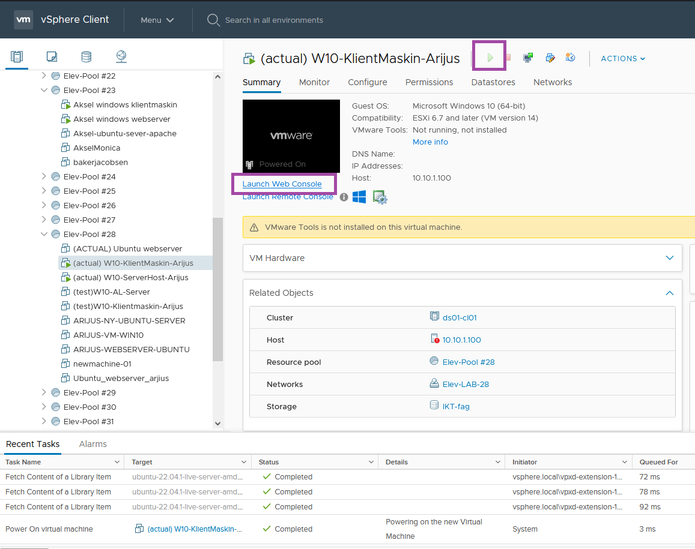
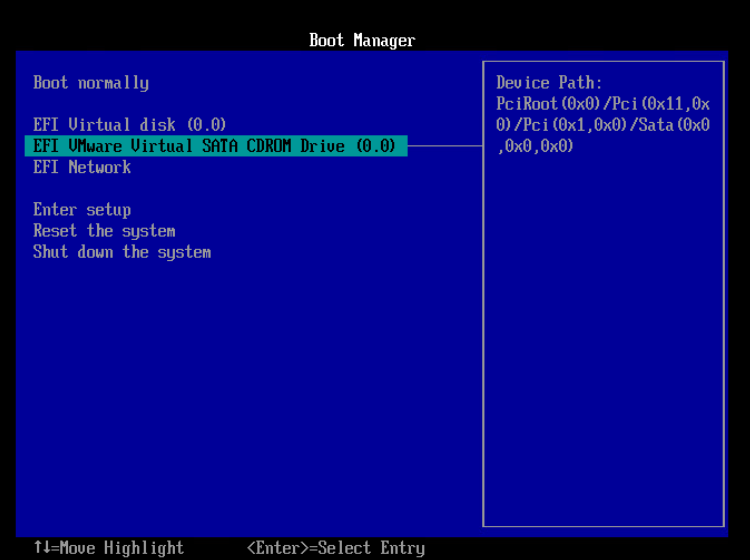
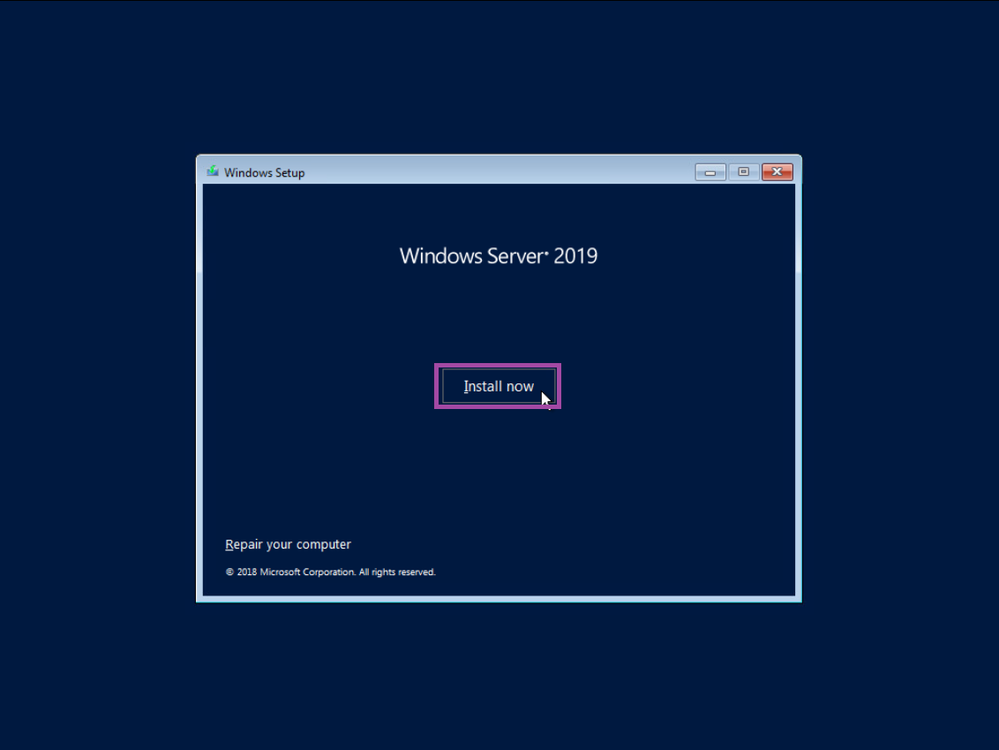
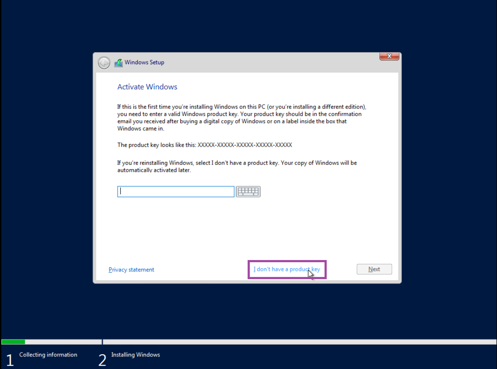
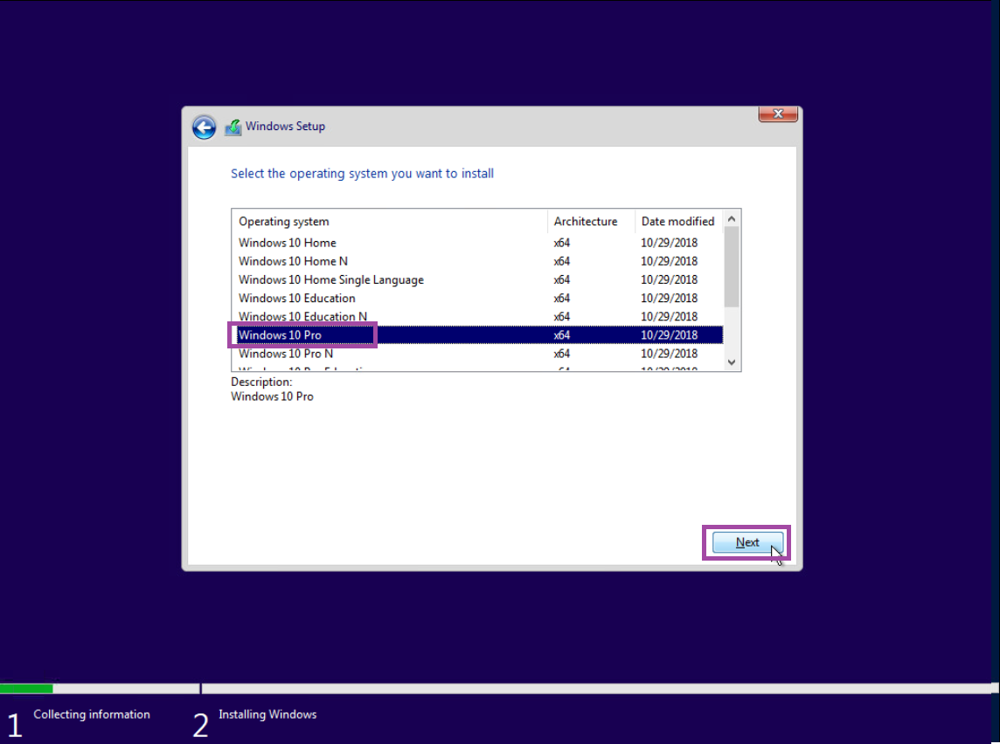
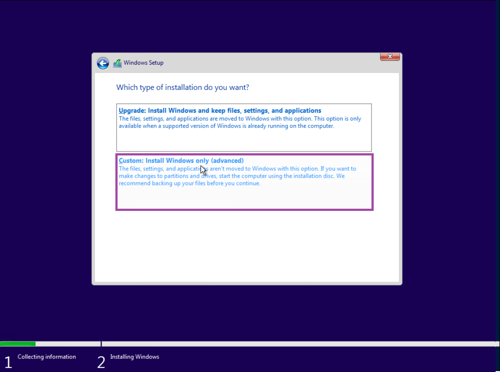
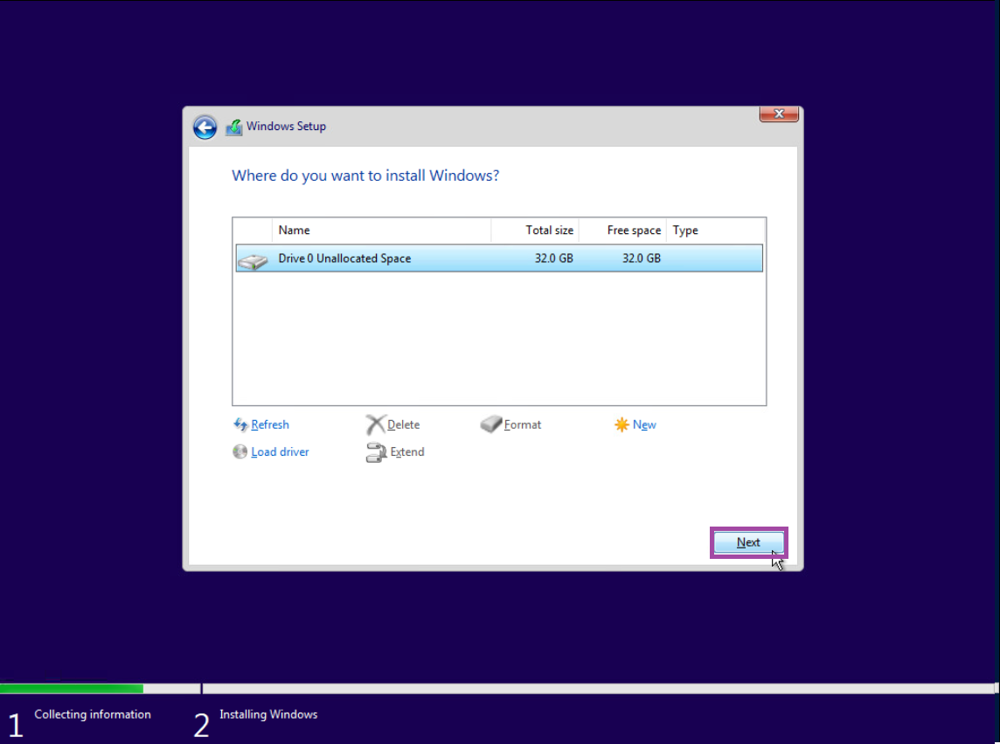
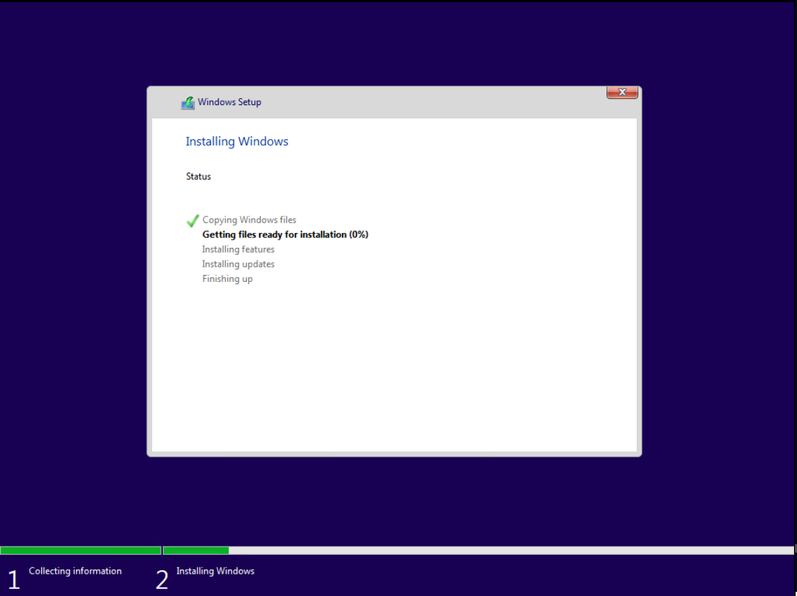
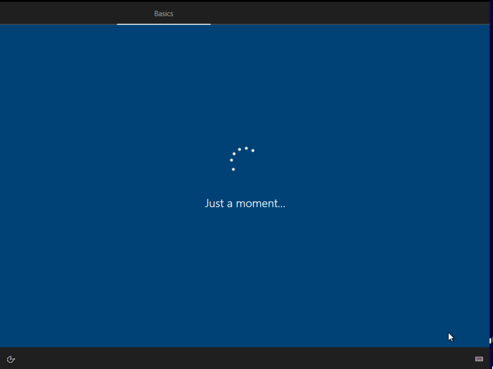
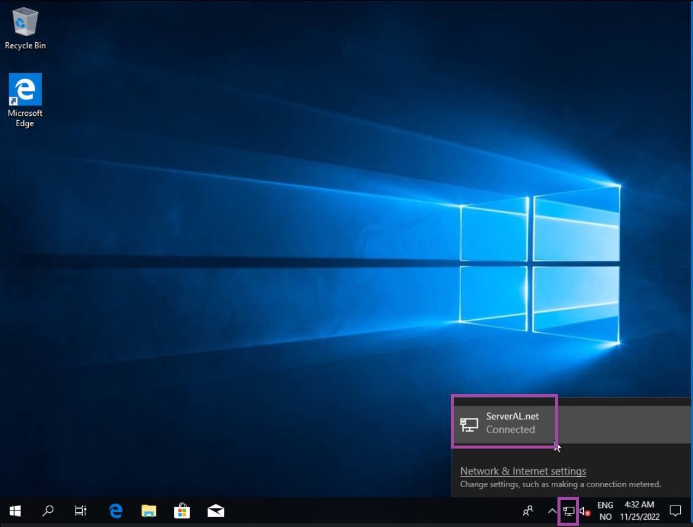

LAURIN LIMITED GUIDEBOOK ©
OPPSETT AV KLIENT MASKIN & NETTVERK
Lær deg hvordan man lager en klientmaskin for å teste ut serveren din. Her skal vi bruke vSphere for å lage en vanlig windows bruker og koble den automatisk opp til nettverket vårt.
Følg nøye med her på hvordan man lager klient-VM'en.
Vis video transkript >>
Nå skal vi sette opp klient maskinen. Naviger til vSphere nettsiden, finn klient maskinen du lagde, skru den på og trykk på «Launch Web Console».
Naviger ned til «EFI VMware Virtual SATA CDROM Drive (0.0)», og trykk på Enter.
Når «Windows Setup» dukker opp, så velger du ditt tastatur språk (jeg anbefaler at du velger norsk tastatur), så fortsetter du og trykker på «Install Now».
Vi trenger ikke å activate Windows, så trykk på «I don’t have a product key».
Når du skal velge et operativt system, så anbefaler jeg at du velger «Windows 10 Pro», for det er den som blir brukt mest. Etter det så trykker du på «Next».
Når du skal velge installasjons type, velg «Custom: Install Windows only (advanced)».
Hvis alt ser likt ut som på bildet, så trykker du på «Next» igjen.
Nå er det bare å vente på at maskinen installerer Windows.
Når du har kommet fram til windows basics installelasjonen, så er det ikke så viktig hva du velger. Så da er det bare å skrive inn alt som er nødvending som windows kommer til å spørre etter, og fortsett videre helt til du er ferdig.
Når klient maskinen er ferdig installert, og serveren har blitt satt opp riktig, så bør du allerede se at klienten er allerede koblet til nettverket som vi lagde. Hvis ikke, sjekk at du har fulgt alle stegene riktig. Hvis du har gjort noe feil så må du desverre gå gjennom hele prosessen av å sette opp serveren og klienten på nytt.
Fortsett til neste steg